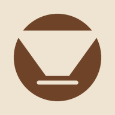

Заварки
Откроется чат Claude с вашим рецептом и записями по этому зерну. Он подскажет, что поменять.

Утренняя воронкаV60 · журнал заварокПодключаю журнал…
Откроется чат Claude с вашим рецептом и записями по этому зерну. Он подскажет, что поменять.
Откройте коллекцию, поставьте на панель зерно, которое сейчас завариваете, или добавьте новое.
Шаг помола «½» — половина цифры на лимбе C5 ESP, это 2–3 щелчка. Меняйте что-то одно за раз.
Помол записан как положение на C5 ESP: один полный оборот от нуля плюс цифра на лимбе (между цифрами 5 щелчков по 15 мкм). Температура указана по датчику вашего чайника.
Записи хранятся только в этом браузере на этом телефоне. Сделайте копию, если меняете телефон или чистите данные браузера.